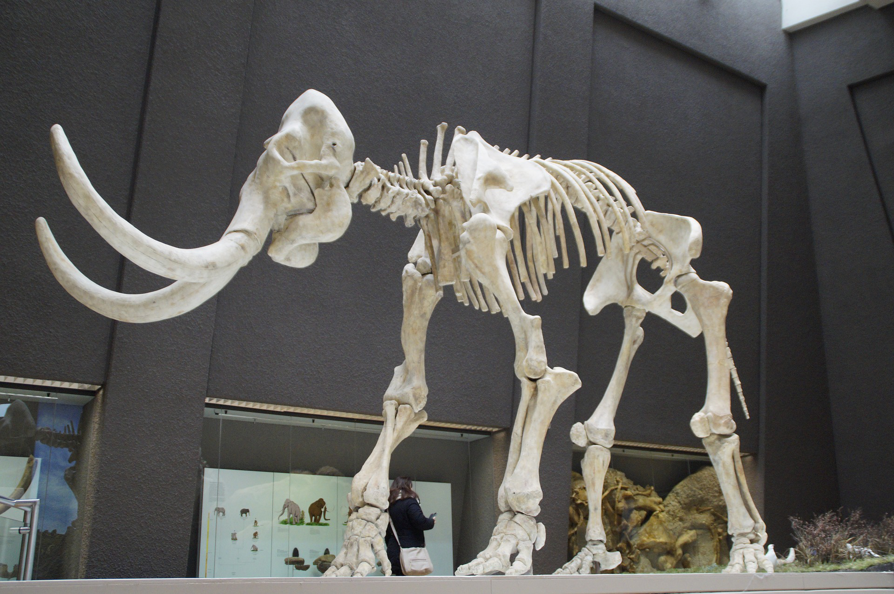

<!DOCTYPE html>
<html lang="en">
</html>
<head>
    <meta charset="UTF-8" />
    <meta name="viewport" content="width=device-width, initial scale=1.0" />
    <meta name="description" content="Community Science Museum is a community-driven museum where we're commited to making science accessible to all. Both kids, teachers and researchers, are welcome to come explore, learn and experiment with our team of experts." />
    <title>Community Science Museum | Explore</title>
    <link href="css/styles.css" rel="stylesheet" />
    <link href="css/explore.css" rel="stylesheet" />
</head>

<body>
    <header>
        <!---nav bar -->
        <nav>
            <div class="logo">
                <a href="index.html">
                    
                </a>
            </div>
            <div class="logo_text">
                <a href="index.html">Community Science Museum</a>
            </div>

            <ul class="navigation_links">
                <li><a href="explore.html">Explore</a> </li>
                <li><a href="exhibitionspaces.html">Exhibition Spaces</a> </li>
                <li><a href="specialevents.html">Special Events</a> </li>
                <li><a href="visit.html">Visit</a> </li>
                <li><a href="get involved.html">Get Involved</a> </li>
            </ul>
            <!--  Added Hamburger Menu
                  Changes are visible during mobile view only
                  Image is hidden with CSS when from 1200px width and upwards. -->
            <div class="mobile-nav">
                
                <div id="mobile-nav-links">
                    <a href="explore.html">Explore</a>
                    <a href="exhibitionspaces.html">Exhibition Spaces</a>
                    <a href="specialevents.html">Special Events</a>
                    <a href="visit.html">Visit</a>
                    <a href="get involved.html">Get Involved</a>
                </div>
            </div>
        </nav>

        <!---nav bar -->
        <!--Removed unecessary code and made some global tags to avoid repeats
        All <br> are removed and replaced with margin-top where the space is needed as stated in the feedback.
        Some cleanup in code is also done.-->
    </header>  
        <section class="shortenedexplore">
        <div class="explore_text">    
            <h1 id="museum-h1">
                Explore
            </h1>
            <h2>For kids</h2>
            <p>Are you a young person looking to learn more about science? Come on down to our museum, there’s plenty to see
                and do.
                You can learn about Newtonian physics from our bumper swing, or why not travel back in time and meet our
                resident Woolly Mammoth? Our exhibits are designed to be accessible for interested minds, so make sure you
                come ready to learn and explore.
                We also have the Young Stars club which meets once a week on a Saturday between 10:00 and 13:00 where you’ll
                get to explore and experiment with our team of experts.
                During the school holidays we run special holiday clubs where you can join other children your age to go on
                a journey of discovery. Each holiday we pick a new theme to explore. To find out more about the holiday club
                and how you can join, send us a message.</p>
            <h2>For teachers</h2>
            <p>As a community-driven museum, we want to work with schools to create places of learning and exploring. Our
                team are on hand to give your students guided tours of the museum, teach them in our learning laboratory,
                and provide great video presentations that will excite and inspire them.
                Please get in touch with us here to find out more about our facilities and to arrange a time to bring your
                students through for a visit.</p>
            <h2>Researchers</h2>
            <p>Are you looking to get involved with our team of researchers and academics? Our museum offers various ways
                for you to use our resources and contribute towards them. We have online records, laboratory space, and a
                working relationship with a number of universities around the country.</p>
        </div>    
            
    </section>
    <br>
    <footer>
        Copyright &copy; Community Science Museum
    </footer>
    <script src="script.js"></script>
</body>
<!--Moved </html> to it's proper position and moved footer into the Body tag, 
    in the first delivery the tag was on the outside of the Body tag -->
</html>